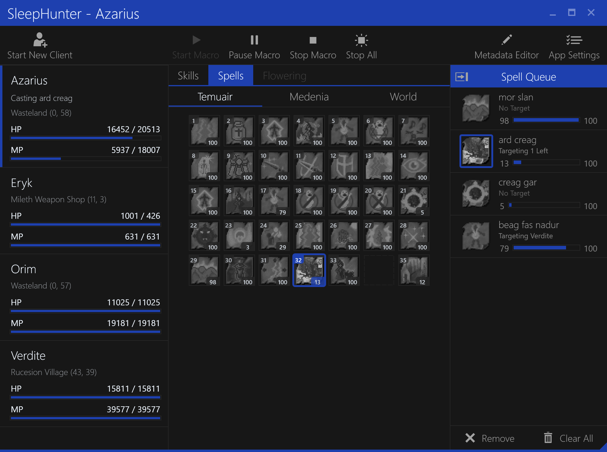
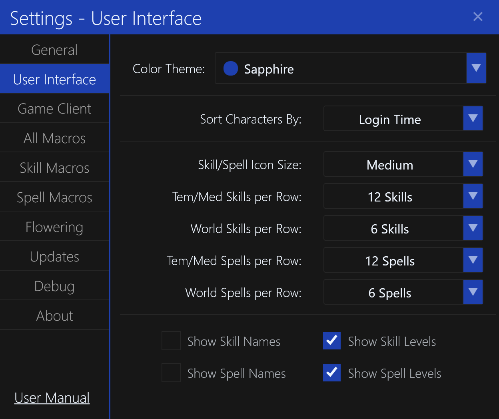

Introduction
What is SleepHunter?
SleepHunter is an automation tool for Dark Ages, a massively multiplayer online role-playing game (MMORPG). It is used to automate the repetitive process of leveling a character's abilities.
The current version is 4.x, which is the culmination of over a decade of experience, testing, and enhancements from user feedback.
You can view the release notes to see what has changed in each version.

What was it made using?
SleepHunter is written in C# using the Windows Presentation Foundation (WPF) framework.
It is built using the Visual Studio IDE, and now targets .NET 7.0 as of 2023.
The user interface is designed using custom XAML styles and templates.
You can view the source code on GitHub.
Why didn't you go network (packet-based) instead?
This was a constant internal struggle that I had when developing v4. In fact, several times I had thought about scrapping v4 and re-writing it to be network-proxy based instead.
It was quite the effort digging through the client's memory and figuring out static and dynamic memory offsets for variables. Many, many times I'd get frustrated and ask myself why am I taking the half-measure of being memory-based instead!
The primary reason was that I was concerned that SleepHunter would become a defacto bot, even if not my intentions. It was already quite powerful, and I was toeing a line of ethics in being somewhat measured in what I released to the public.
For those who know me and my history in-game, I am no stranger to the more "questionable" methods of play. Had my fair share of malarkey, shennanigans, and downright tom-foolery. Good memories indeed.
However, I had seen what could happen if a program of that magnitude was released for everyone. I remember the days of Eru's zero-line client going around. I remember my infamous Injector that also got around. I remembered other developers' bots and "hacks" that got passed around quite freely.
Ultimately, I did not want to see that happen again and ruin whatever was left of the game at the time.
Another reason was that if SleepHunter acted like a network proxy between the client and server, it becomes a potential point of failure. If it crashes, you disconnect. If there's a bug in the network code, you might crash or disconnect. With memory-based, it's an entirely "passive" approach the client is unaffected.
The other limitation is that you can't attach post-login. So if you decided you wanted to macro suddenly, you would have to log out and re-launch through the SleepHunter proxy application instead. This felt like a hassle, whereas with reading process memory you can do that anytime.
There are certainly pros and cons to each approach. I eventually sided with controlled power, reliability, and ease of use.
What is the license?
SleepHunter is licensed under the MIT License.
History
As the version would suggest, this fourth major iteration 4 of SleepHunter.
Let's take a look back at how it came to be what it is today.
Why is it called "SleepHunter"?
Dark Ages is a heavily in-character online role-playing game, especially in the earlier days.
Using some kind of program or "tool" to increase your skills was considered an unfair advantage and deemed against the rules. In-character this was considered "sleephunting" (leveling your skills while being "asleep", or away from the keyboard).
If you were caught doing this, whether using a program or something as simple as a paperclip stuffed in your keyboard to auto-attack, you would be punished for the crime of "sleephunting". This meant you would be temporarily banned from certain areas, or placed into a jail cell to serve time.
Your "legend", or history of character's deeds and misdeeds, would be tarnished with an orange mark for each time you were caught. You could even have your character permanently banned if caught enough times.
So thus the name was born from being cheeky and naming an automation tool after the crime itself.
Why did you make it?
In Dark Ages each skill or spell would start at level zero and gradually improve as you used it, usually up to the maximum of level 100. Depending on the ability, the level would impact effectiveness or chance of success, or even duration. To learn the next rank of an ability, or other higher abilities you often needed a certain level of an existing ability.
Being an online, social game it was very common for people to sit around non-hostile areas and improve their skill and spells levels while chatting. Some people did it by hand, others used off-the-shelf "macro" prorgrams that would move their mouse cursor and type keys on the keyboard for them. Usually, these were set up in somewhat a repeatable, looping script.
It was not considered "illegal" to do this if you were paying attention at the keyboard and could respond to an in-game "guard" or "Ranger" that suspected you. However, if you did not respond, you would be in trouble and face punishment.
The main problem with existing tools of the time is that these macro programs would move your mouse cursor or send keystrokes to the current active application. It made multi-tasking very difficult because your mouse would keep moving and keys would just be hit.
I wanted a specialized macro program that would send mouse and keyboard events only to the game client itself, allowing a seamless multi-tasking experience. Fortunately, this was possible using Win32 Window Messages and a debugging tool called Spy++ from Microsoft.
Why was "macroing" such a thing?
Dark Ages is a fairly long-running game initially released around August 1999. It went through a long period of testing and design before that as well.
Being from that era, and based around "old school" D&D mechanics and table-top design it was what some would call very "grindy". Meaning that it would take a lot of time for you to gain experience, level up, and progress your character.
During normal play of this time, your abilities would naturally develop as you hunted in groups and spent hours killing monsters. So this was not nearly as much of an issue of abilities being "behind".
Content Creep & Imbalance
However, as more content was added to the game, it became easier and easier to level up quite quickly. To the point where you would always be very far behind and frustrated when going to learn the next ability.
In other cases, some vital skills would have abyssmal "hit" chances unless they were almost maxed. Healing efficiency was also reduced and it was almost mana-inefficient at times unless you got to a certain level of your healing spells.
So to put it shortly, bad game design that was never revisited or fixed lead people to "macro" or "sleephunt" to get by. This was a contentious issue that constantly went back and forth on the ethical debate. Some saying it was unfair play, others saying the development team should actively address the game balance.
Enter the Dojo
At some point, a "sleephunting Dojo" was created by the development team. A place where you could pay gold and legally "macro" your skills while being away for a set amount of time (hours). After which, it would automatically teleport you out and you would have to pay to re-enter again.
Ironically enough, if you got kicked out and continued to be "sleephunting", you could get in trouble as you were outside of the Dojo.
SleepHunter v1 (2004)
The first version of SleepHunter came from my frustration with existing macro programs. The main thing I wanted was the ability to multi-task properly while also improving my skills.
I was in college at that time and would come back home on the weekends to visit my parents. I would use my dad's work laptop, some IBM Thinkpad and play Dark Ages while I was there.
I was still "learning" .NET (C#) at the time, so this program was written in Visual Basic 6 as I was more familiar with it.
The overall design was a listbox that you could add a variety of pre-defined commands, including repeat loops. You could start/stop playback of the macro as well as save and load it for future use.
Despite being quite basic, it did use Window Messages to send events which meant that only the game client would receive those mouse and keyboard actions, instead of the current application. It was now possible to "macro" or "sleephunt" while doing other things!
SleepHunter v2 (2004)
The second version was released only a month after the first, also written in Visual Basic 6. At that time, it was obvious to me that I really wanted to expand the functionality possible with the application.
The major improvement in this version was reading character state from the game client itself, enabling logic for if/else on variables like HP, MP, X, Y, and Map number.
There were also some changes in how it would activate the different skill/spell panels to (hopefully) keep the chat pane open while you were macroing (if desired).
The overall application was more or less the same, just more game-specific commands that you could perform.
SleepHunter v3 (2005)
The third version was released the following year, completely rewritten in .NET 2.0. I was enjoying C# compared to VB6 and it opened a lot of possibilities within the codebase.
There definitely was a learning curve, especially with Win32 interopability and P/Invokes but it was worth it.
Following the trend, more functions were added and multiple characters could be macroed at once.
This time the UI was split with the left sidebar showing the "library" of available functions, and the right area hosted windows showing each character and their macro script.
It was amazing to see what people built using these commands, including "walking" scripts to far-off places. Some would even "pathfind" by extensive if/else logic on the map coordinates.
SleepHunter v4 (2012)
The fourth version was released several years, again rewritten in WPF instead of WinForms for the UI.
I was fascinated with the themeing and skinning potential of WPF, and went all out. I probably spent more time on the UI design and XAML than I did actually coding the functionality.
I wanted to add more capabilities to make it the most efficient, yet easy to use macroing program for Dark Ages. In order to do that, I knew I would need to be able to read more character state and implement the ability to perform more actions like equipping items and having alternate characters assist others.
It became obvious to me that this was untennable from a "scripting" perspective, at least if the layperson was going to be able to use it. So the user experience was drastically changed. Instead you could simply double-click to add spells and skills to a queue and be on your way.
The macro engine let you set a variety of parameters but for the most part it was automatic. It could detect when to switch staves for better cast times, wait for mana regeneration, and even flower other characters for nearly-inifite mana.
All of these things required building XML data files so the application could understand the game mechanics. To keep it sustainable, it is also user-editable within the application.
After looking back on it, it was worth the effort. The application aged incredibly well and stood the test of time, even if being "ahead" of the modern flat design trend.
There was also a slight UI facelift in 2016 as well, mostly toning down font sizes and some iconography improvements.
Going Forward (2023+)
While SleepHunter v4 continues to be the current version and fairly stable, there were always things I wanted to improve upon or add. The infamous "Auto-Update" that never actually functioned is one of many (now available in v4.1.0).
A proper user manual hosted as this repositories GitHub Pages would also be useful, and can be linked from the application itself.
I also was never happy that despite using WPF, I ended up building it very WinForms-y in terms of code-behind instead of a proper MVVM data-binding application. It's probably too much work to refactor for no apparent gain, but for anyone considering writing a WPF application today -- use MVVM.
There's still a few bugs I want to fix as well. I am still humbled by the fact people still use this application over two decades later. That and I am surprised the game itself is still online, even if only a husk of its former self.
I absolutely accept PRs for this application! If you have a feature or bug fix that you want to implement yourself, have at it.
It should be much easier to coordinate and distribute now that Auto-Update is live.
Features
SleepHunter is an incredibly powerful automation tool for Dark Ages.
This section is a high-level overview of the features that are available in SleepHunter. You can find more detailed information about each feature as you read through the rest of this documentation.
Direct Interaction
SleepHunter uses Windows Messages to directly interact with the game client. This allows SleepHunter to emulate user input without interrupting the user's normal workflow on their computer. No errant mouse clicks or keyboard presses in other applications will occur while SleepHunter is running.
Game Client Detection
SleepHunter scans all running processes to find Dark Ages game clients automatically. It can detect multiple game clients running on the same computer at the same time.
Uses client signature to differentiate between varying client versions (including modified clients).
Runtime Patching
SleepHunter can launch new game client instances and patch them at runtime, allowing tweaks such as multiple instances and skipping the intro video on startup. This is useful for running multiple characters together.
Character State Reading
SleepHunter can read the current state of each character logged into a game client. This includes the character's name, level, health, mana, location, inventory, skills, and spells. It can also read the state of various user interface elements such as the chat window, skill window, and spell window.
Map Aware
SleepHunter reads the current map that the character is on, and can detect when the character has moved to a new map. This allows automatic stopping of macros when the character has left the Dojo or any other map, avoiding the risk of punishment.
Game Metadata
SleepHunter has a built-in database of game data, including the names of all skills, spells, and staves for casting. This allows intelligent "wait for mana", "disarm", and other features that require knowledge of the game's mechanics and state.
There is even a built-in metadata editor that allows you to add your own custom skills, spells, and staves.
Asynchronous Skills
SleepHunter can use multiple skills at the same time, interleaving them to maximize the skill increases. It can also do this while casting spells, allowing you to level up your spells while you level up your skills.
Spell Queue
SleepHunter can queue multiple spells to be leveled up at the same time, either one at a time or round-robin style. You can set a maximum level for each spell, and it will stop casting that spell once it reaches that level.
Flower Queue
SleepHunter can queue different targets to use Lyliac Plant (flower) for sharing mana to others. It also supports Lyliac Vineyard for group-based mana distribution.
Automatic Fas Spiorad
SleepHunter can cast "fas spiorad" automatically when your character is low on mana. This includes when acting as a "mana battery" for other characters, including your own.
Staff Switching
SleepHunter can automatically switch between staves when casting spells to ensure the fastest possible cast time. It can also temporarily un-equip a staff for zero-line casting of some instant spells.
Alternate Character Aware
SleepHunter is aware of all other characters logged in on the same computer. This allows it special functionality when supporting other characters and prioritizing mana distribution.
Hotkeys
SleepHunter allows user-defined hotkeys to start, pause, and resume automation for each character. This can be used to pause automation when you need to do something manually, or to resume automation when you are done.
Auto-Save Macro State
SleepHunter automatically saves the state of each character's last macro when the application is closed. This allows you to easily resume automation where you left off, even after you close the application.
Color Themes
SleepHunter supports multiple color themes that act as a "skin" for the application. This allows you to customize the look and feel of the application to your liking.
Automatic Updates
SleepHunter now supports automatic updates, checking the same GitHub releases page that you downloaded the application from. If an update is available, you will be prompted to download and install it. SleepHunter will automatically close and restart after the update is applied.
...and more!
As you read through the rest of this documentation, you will find many more features that are available in SleepHunter.
Installation
Requirements
- Dark Ages Client 7.41 (current latest)
- .NET 7.0 Runtime
- Windows arm64 - Download Link
- Windows x64 - Download Link
- Windows x86 - Download Link
- Windows 7, 10, 11 (64-bit)
Installation
- Download the latest version from the Releases page.
- Extract the
SleepHunter-4.x.x.zipfile to a folder of your choice. - Run
SleepHunter.exeto start the application. - Configure your game client settings in the
Settings->GameClientsection. - Read the rest of this documentation to learn how to use the application.
It is very important that you extract all of the files from the SleepHunter-4.x.x.zip file.
Auto-Update
As of version 4.1.0, SleepHunter will automatically check for updates when it starts. It checks the same GitHub releases page that you downloaded the application from.
If an update is available, you will be prompted to download and install it. SleepHunter will automatically close and restart after the update is applied.
You can also manually check for updates by clicking the Check for Updates button in the Settings->Updates section.
NOTE: Your Settings.xml file will not be overwritten when you update SleepHunter.
Manual Update
If you are unable to update SleepHunter automatically, you can manually download and install the latest version. Follow the same steps as the Installation section, but replace the existing files with the new ones.
In most cases, you do not have to overwrite the Settings.xml file.
Uninstall
To uninstall SleepHunter, simply delete the folder that you extracted the application to. There are no registry entries or other files that need to be removed.
Getting Started
So you just installed SleepHunter, and you're ready to start using it. Now what?
One tip is that most of the user interface supports tooltips. If you hover your mouse over a control, you will see information appear with a description of what it does.
See the Main Window section in the sidebar for more information.
How do I macro a skill?
You can macro any number of skills at the same time, simply double-click on the skill you wish to macro as part of your rotation.
The skill will be highlighted in white as well as a colorful box around it, indicating that is is "enabled".
Once you have enabled all the skills you wish to macro, you can start the macro by clicking the Start Macro button in the toolbar.
The selected character will then begin to macro the skills you have enabled.
You can toggle any skill on or off at any time by double-clicking on it, even while the macro is running.
See more information about the Skills Tab.
How do I macro a spell?
You can macro a spell by double-clicking on the spell you wish to macro as part of your Spell Queue.
You will get a popup dialog asking you to select the target for the spell, as well as the maximum level you wish to cast the spell to.
You can leave the Offset X/Y to zero, as that is only needed for fine-tuning the mouse coordinates on non-standard targets.
Once you add a spell to the queue, you will see it appear on the right sidebar. You can add as many spells as you wish to the queue. The spell queue supports drag and drop for re-ordering.
Once you have added all the spells you wish to macro, you can start the macro by clicking the Start Macro button in the toolbar.
You can add and remove spells from the queue at any time, even while the macro is running.
See more information about the Spell Queue.
How do I flower another character? (Lyliac Plant)
You can cast Lyliac Plant (flower) on another character by adding a new flower target at the bottom of the Flowering tab.
Similar to the spell macro, you will get a popup dialog asking you to select the recipient for Lyliac Plant, as well as some logic parameters.
You can leave the Offset X/Y to zero, as that is only needed for fine-tuning the mouse coordinates on non-standard targets.
Once you add a flower target, you will set it appear in the Flowering tab queue. You can add as many flower targets as you wish.
The flower queue supports drag and drop for re-ordering.
Once you have added all the flower targets you wish to macro, you can start the macro by clicking the Start Macro button in the toolbar.
You can add and remove flower targets from the queue at any time, even while the macro is running.
See more information about Flowering.
How do I flower my entire group? (Lyliac Vineyard)
You can cast Lyliac Vineyard for your entire group by enabling the option at the top of the Flowering tab.
This will automatically cast Lyliac Plant on all other characters in your group, when it is available on cooldown.
You can enable this option at any time, even while individually casting Lyliac Plant on other characters.
Remember, you must click the Start Macro button in the toolbar to start the process.
Can I use all of these together?
Yes, absolutely! You can macro skills, spells, and flower your entire group at the same time. SleepHunter has been designed to support all of these features at the same time and will automatically handle the timing of each macro.
It will also switch staves and cast fas spiorad as needed to regain mana.
How do I bind hotkeys to a character?
You can assign custom hotkeys to each of your characters by selecting them in SleepHunter and pressing the hotkey combination you wish to use. This will toggle their macro state when you press the hotkey, even if the main SleepHunter window is not in focus.
To remove the hotkey, simply press the Delete or Backspace key while the character is selected.
If you assign the same hotkey to another character, the previous character will have the hotkey unbound.
There is a visual indicator on the character list item to show if a hotkey is assigned.
Do I have to redo this every time I start SleepHunter?
SleepHunter will automatically save the state of your macroing when you close the application, including hotkeys. This means that when you start SleepHunter again, it will automatically restore the state of your macroing for that character.
NOTE: This does not mean that SleepHunter will automatically start macroing when you start the application, only that it will restore the state of your character's macro when you close the application.
What about the Dojo?
By default SleepHunter is configured to stop macroing once a character's map changes. This is to prevent macros continuing to run once you leave the Dojo (or are kicked out).
You can also configure SleepHunter to close the game client entirely when you leave the Dojo.
Can I customize certain behaviors?
Yes, many of the behaviors of SleepHunter can be customized to your liking in the Settings tab.
It is recommended that you review the Settings before starting macroing.
The default settings are designed to work for most users, but you may want to customize them to your needs.
Changelog
All notable changes to this library will be documented in this file.
The format is based on Keep a Changelog, and this project adheres to Semantic Versioning.
[4.10.2] - 2023-06-29
Removed
- Lots of old code and things that were not being used
Fixed
- Auto-save and load reliability
- Some UI bugs on auto-load
- Lots of performance and under the hood optimizations
[4.10.1] - 2023-06-27
Added
MinHealthPercentto ability metadataMaxHealthPercentto ability metadata (Crasher/Animal Feast/Execute)- Visual indicator on spell queue when waiting on HP thresholds
OpensDialogto spell metadata (was only skills before)- HP threshold in ability tooltips
- More tooltips in metadata editors
Changed
- Use new metadata properties for HP based conditions on abilities
- Redesign some metadata editors for skill/spells
- Increase dialog size for skill/spell metadata editors
- Tooltip design
Removed
- Removed hard-coded names for HP-based skills (now is customizable)
Fixed
- Improved dialog closing (deferred dispatcher)
- Autosave load error popup & info
- Thousands formatting for HP/MP
[4.10.0] - 2023-06-27
Added
Save Macrotoolbar buttonLoad Macrotoolbar button- Window title parameter for client versions
- Macro features are now saved with state
Changed
- Renamed
Start New Clientbutton toLaunch Clientto fit newLoadandSavebuttons - Updated min width to fit new toolbar buttons
- Refactored entire save state system
- Refactored local storage (features)
Fixed
- Auto-save reliability
- Spell rotation combo box sometimes being empty
[4.9.0] - 2023-06-24
Added
Itemstab now features anInventory/Equipmenttoggle for viewing eachEquipmentview to see all equipped items in a list (by slot)
Changed
Inventorytab has been renamed toItemsInventorywill now scroll vertically (when necessary)Skillswill now scroll vertically (when necessary)Spellswill now scroll vertically (when necessary)
Fixed
- Equipment memory offsets for Zolian (staff-switching now works)
[4.8.2] - 2023-06-23
Added
- "Use Water & Beds" for MP recovery feature (Zolian only)
- "Browse" button for selecting client path with open file dialog
Changed
Floweringtab is now only shown in USDA clients- Tweak the color theme dropdown layout
- Spell queue automatically opens when selected a character with queued spells
[4.8.1] - 2023-06-22
Added
- Gold display to inventory (last slot)
Featurestab for client-specific feature options (per-character)- Feature flag support for client-specific functionality in
ClientVersiondefinitions
Changed
- Client version
7.41is now renamedUSDA 7.41for clarity
Fixed
- Fas spiorad bugs (needlessly cast at low mana)
- Better spellbook cooldown updates
[4.8.0] - 2023-06-21
Added
Inventorytab to view items (names only for now)- Inventory grid display options under
User Interfacesettings Signaturedefinition forClientVersion, which allows version to be detected by signature bytes instead of hashExecutableNameandWindowClassNameproperties forClientVersionto support other clients- Client version for
Zolian 9.1.1memory offsets (Zolian Server)
Changed
UserSettingsis now version1.6- Launched clients now detect version based on the new signature definitions
- Process manager can detect other clients based on version definitions
- HP/MP formatting threshold increased to 10k for "thousands" shorthand
User Settingsdialog is now larger
Removed
ValueinClientVersion, as it was never usedHashinClientVersion, now using signature-based detection instead
Fixed
- Parsing of skills/spell names with no level text
[4.7.0] - 2023-06-16
Added
- Spell rotation combo box in Spell Queue for per-character setting
- Spell rotation character setting is preserved in saved state
- Spell cooldown indicator in Spell Queue
- New option for
Skip Spells on CooldownforSpell Macros(default isEnabled) - Spells on cooldown will be skipped, even in no rotation/singular order (when enabled)
- More accessibility key for checkboxes in
Spell Macrosettings
Changed
Spell Rotation ModerenamedDefault Spell Queue Rotationto better describe it can be overridenUserSettingsare now version1.5- Now format health/mana using
kandmsuffixes for thousands/millions (ex:256k,1.2m)
Fixed
- Some staff line changes
- Better spell queue rotation handling
[4.6.1] - 2023-06-03
Added
- Status icons now next to character name (when running/paused)
Changed
- Small UI tweaks on character list text spacing
- Adjusted min size on the character list to accomodate new status icon
- Will look in a few places for the default DA client path
Removed
DirectDrawCompatibilityFixoption and support (it was causing side effects for some users)- TO REMOVE: Delete
ddraw.dlland theDDrawCompat-Darkages.inifiles from your DA client folder
Fixed
- Marked
Assail,Assault, andClobberskills as assail types - Clear macro status on stop (fixes "Assailing" being displayed when stopped)
Executeskill now also waits for < 2% hp- Spell queue levels not updating until next cast
[4.6.0] - 2023-05-31
Added
DirectDrawCompatibilityFixoption for fixing flickering mouse cursor (DDrawCompat repo)
Changed
UserSettingsare now version1.4
[4.5.5] - 2023-05-21
Added
- Many missing spells for Temuair
- Many missing spells for Medenia (AB50+)
- Many missing skills for Temuair
- Many missing skills for Medenia (AB50+)
Fixed
- Spell lines and mana costs for some spells
- Keyboard navigation via tab in some UI elements
[4.5.4] - 2023-05-19
Fixed
- Skill cooldown memory reading inconsistencies
[4.5.3] - 2023-05-18
Fixed
- Process memory scanning on 64-bit, cooldowns should be more reliable now
- Reset cooldown pointer on re-log same client instance
[4.5.2] - 2023-05-18
Added
- Missing staves for all Medenia classes (AB 50+)
- Missing staves for bards (AB 70+)
- Missing staves for summoners (AB 70+)
Fixed
- Cooldown detection fixed on 64-bit computers
- Macro toolbar state now updates more reliably (map/location change)
- Spell queue now hides when last character logs out
- Non-integer window scaling now supported (ex: 150%, 175%, etc)
[4.5.1] - 2023-04-18
Added
- Can dismiss Spell & Flower Target dialogs via
Escapekey
Fixed
- Hide
No Targetoption for spells that require one - Hide the
Mouse OffsetforNo Targetspells - Hide the
Mouse OffsetforScreen Positionflower target
[4.5.0] - 2023-04-18
Added
- CPU info in
Settings-Abouttab - .NET version displayed in
Settings->Abouttab
Changed
- Now built against newer .NET 7 instead of older .NET Framework 4.8.1 runtime
- Removed build date from
Settings->Abouttab
[4.4.2] - 2023-04-18
Changed
- Client versions no longer reset to defaults, file is required
- Client versions no longer auto-save to file on close
- Client versions will warn on startup when not found, disable start client button
- Themes no longer auto-save to file on close
- Themes will fallback to default style on error
- Metadata files no longer auto-save to files on close
- Status bar has been removed and made into thinner border + resize grip
Fixed
- Character sorting by login time
- Character sorting not updating
- Not showing all clients when debug option was checked on startup
[4.4.1] - 2023-04-16
Added
Show All Processesdebug option inSettings->Debug- Login timestamp to players
- Client sort order option in
Settings->User Interface, defaults to login time - Get client start time from Win32 kernel
Changed
UserSettingsare now version1.3- Non-logged in game clients are now hidden by default (use new debug option to show)
- Clients now default sort by login time (oldest to newest)
- Tweak layout of metadata editor windows
Fixed
- Disable spell queue remove buttons on startup (when empty)
- SleepHunter window title not changing sometimes
- Disable skill/spell tabs when no client
- Disable spell queue when no client
[4.4.0] - 2023-04-15
Added
Debugtab inSettingswindow- More skill & spell metadata
- MP cost display in spell target dialog
- Height resize animations to spell and flower dialogs when selecting target types
- User Manual hyperlink within application (still WIP)
- On first run the application will ask the user if they wish to open the user manual docs in the browser
- User manual link in settings window (below all tabs)
- Spell queue toggle button
Stop Alltoolbar button
Changed
- All new color themes
UserSettingsare now version1.2- Moved debug logging option to new
Debugsection inSettingswindow - Accessibility shortcuts for tabs in the
Settingswindow - Better control alignment and layout in the
Settingswindow sections - Shortened toolbar button text as
Start Macro,Pause Macro,Stop Macroinstead - Metadata editor is now launched from toolbar directly (instead of
Settings->General) - Improved wording on auto-save macro state setting
- Minimum flower "less than mana" threshold is 1 mana (instead of zero)
- Numeric inputs can now have prefix/unit contextual decorators
- Redesigned layout of spell and flower target dialogs
- Flower queue now shows a timer instead
- Increased padding on flowering options under the main window tab
- Spell queue now highlights icon in white instead of color to be consistent with skill macros
- Renamed
Tile RadiustoTile Areatarget type for more clairity - Renamed
Absolute X/YtoScreen Positiontarget type for more clarity - Screen coordinate targeting capped to 1280x960, minimum now zero for each dimension
- Slightly narrower dropdown button
- Tooltips open faster
- Spell queue now has a placeholder on the right side
- Show 'No Target' in spell queue for no target spells
Removed
- Data file error dialogs on launch
Relative Coordinatestarget type, as it is redundant withSelfand x/y offsetsRainbow Modeas it is not very useful, visuallyReset Themesbutton inSettings->User InterfacesectionReset Versionbutton inSettings->Game Clientsection- Missing spell indicator warning (now shows as zero MP)
- Progress bar in flower queue
- Status bar 'Ready' text
Fixed
- Disable start/pause/stop buttons on app load, until client login
- Disable start/pause/stop buttons on client logout
- Numeric inputs now use regex and allow much better text input of values
- Numeric input boxes now validate/update on lost focus
- Spell queue "disabled" selected text is now white instead of gray on gray
- Double-click actions only respond to left-click now
- Select default them when invalid settings
- Spell queue will only open when adding a spell (not when switching tabs)
[4.3.0] - 2023-04-11
Added
- SleepHunter can now update the Updater prior to installing new versions
- Visual separate between vertical tabs (settings window)
- New standalone Updater (no references to main app)
- Basic MVVM code for Updater
Changed
- Main window title font reduced
- Font size reduced throughout most text
- HP/MP font size slightly increased
- Dropdown and text input boxes wider in most places
- Spell queue current/max level font size slightly increased
- Slightly adjusted UI background and text colors for contrast
Fixed
- Better file handling for potentially missing files when client path is invalid
- Numeric up/down now highlights border when it has focus
[4.2.1] - 2023-04-11
Added
- Updater now has a retry button on failure
Fixed
- Revert macro core changes, causes crashes when flowering sometimes
- Updater now waits for
SleepHunter.exeinstances to terminate before updating
[4.2.0] - 2023-04-11
Added
- Support for logging to files
LoggingEnableduser setting to enable generating log files (off by default)- Logging throughout the application
- Basic inversion of control (IoC) framework
- Dark Ages client titles now renamed to
Darkages - ${Character}for identifying multiple instances - Dark Ages client titles renamed back to
Darkageswhen logged out of a character
Changed
- User settings version is now
1.1 - User settings version is now updated on save
- Initialize services on startup before app load
- Improved wording on several error dialogs
- Flower worker is now more responsive (100ms -> 16ms delay)
- Client versions (
Versions.xml) are only saved when the existing file does not exist - Color themes (
Themes.xml) are only saved when the existing file does not exist
Removed
- Annoying "unable to save file" popups on close, are logged instead
- More dead code
Fixed
- Flowering target should now wait for
If Mana < Xthresholds for alts - Flowering targets should better multiple handle alts (not getting stuck queue)
- Updater throwing error when
Settings.xmlalready exists - Updater should use same color theme as main application
[4.1.0] - 2023-04-10
Added
- New
Updatessection inSettingswindow allowing version checking - New
Auto-Updatewindow for downloading updates and launching the updater - New
SleepHunter.Updaterchild project for applying auto-updates - New scanline overlay for displaying modals
- Check for new updates on startup (if enabled)
Changed
- Accessor key for
Aboutis nowAlt+Binstead ofAlt+A(conflicted withAll Macros)
Removed
- Dead code for MVVM (use
CommunityToolkit.Mvvminstead) - Old
Debug.WriteLinecalls (only used in Debug mode)
[4.0.1] - 2023-04-09
Added
- Proper CHANGELOG format
Changed
- Version is now 4.0.1 to align with the namesake
- .NET Framework 4.8.1 support
- Updated personal email address
Removed
- .NET Framework version display in
Settings->About
[1.5.0] - 2016-09-13
Added
- Support for DA Client 7.41
- Main toolbar buttons now recognize ALT shortcut key
- Drag and drop support for spell queue list
- Drag and drop support for flowering queue list
- Improved tool tip for undefined spell warning
- Better support for 64-bit Win32 APIs
- More color themes based on Google Material palette
Changed
- Default window size increased to 1024x768
- Minimum window size increased to 800x600
- Main toolbar icons now use Segoe UI Symbol font
- Main toolbar text labels slightly modified
- Use Segoe UI Symbol font for icons
- Reduced font sizes in many areas
- New selection indicator that shows a left bar instead of full cell highlight
- Character list font sizes have been decreased
- Character list health and mana bars are slightly taller
- Skills tab is no longer scrollable, uses compact sub-tabs for Temuair/Medenia/World
- Spells tab is no longer scrollable, uses compact sub-tabs for Temuair/Medenia/World
- Spell queue is now always visible when not empty
- Spell queue no longer hidden when switching to other tabs
- Spell queue now has "remove" and "clear all" buttons for clarity
- Spell queue warning indicator now flashes
- Spell queue rotation now defaults to singular order instead of round robin (can be changed)
- Flowering queue list item layout redesign for clarity
Removed
- Spell queue "move up"/"move down" buttons (in favor of drag and drop)
- Flower queue "move up"/"move down" buttons (in favor of drag and drop)
Fixed
- UI threading issues that could cause
InvalidOperationexceptions
License
The MIT License (MIT)
Copyright (c) 2004-2023 Erik Rogers
Permission is hereby granted, free of charge, to any person obtaining a copy of this software and associated documentation files (the "Software"), to deal in the Software without restriction, including without limitation the rights to use, copy, modify, merge, publish, distribute, sublicense, and/or sell copies of the Software, and to permit persons to whom the Software is furnished to do so, subject to the following conditions:
The above copyright notice and this permission notice shall be included in all copies or substantial portions of the Software.
THE SOFTWARE IS PROVIDED "AS IS", WITHOUT WARRANTY OF ANY KIND, EXPRESS OR IMPLIED, INCLUDING BUT NOT LIMITED TO THE WARRANTIES OF MERCHANTABILITY, FITNESS FOR A PARTICULAR PURPOSE AND NONINFRINGEMENT. IN NO EVENT SHALL THE AUTHORS OR COPYRIGHT HOLDERS BE LIABLE FOR ANY CLAIM, DAMAGES OR OTHER LIABILITY, WHETHER IN AN ACTION OF CONTRACT, TORT OR OTHERWISE, ARISING FROM, OUT OF OR IN CONNECTION WITH THE SOFTWARE OR THE USE OR OTHER DEALINGS IN THE SOFTWARE.
Toolbar
The toolbar has the following buttons:
- Launch Client
- Load State
- Save State
- Start Macro
- Pause Macro
- Stop Macro
- Stop All
- Metadata Editor
- App Settings.
Launch Client
This button will launch a new game client, applying any tweaks that are enabled in the Settings window.
By default, game clients that are not actively "logged in" will not be displayed in the list.
Load State
This button will open a dialog to manually open the current character's state from a file.
NOTE: Any skills/spells that are not available on the character will be ignored and not added to the queue.
Save State
This button will open a dialog to manually save the current character's state to a file.
Start Macro
This button will start macroing the selected character, performing any actions that they have queued. If paused, this will resume macroing the selected character.
Pause Macro
This button will pause macroing the selected character, retaining the current state of the macro.
Stop Macro
This button will stop macroing the selected character, resetting the macro state.
Stop All
This button will stop macroing on all characters, resetting the macro state.
It is equivalent to clicking the Stop Macro button for each character.
Pause vs Stop Macro
The main difference between Pause Macro and Stop Macro is that pause acts as a temporary stop, while stop will reset the macro state for that character.
You can notice this with certain timers like flower targets when you pause/resume versus stopping and re-starting.
NOTE: This does not mean that your skills and spells will be removed from the queue, only that the macro state will be reset.
Metadata Editor
This button will open the Metadata Editor window.
App Settings
This button will open the Settings window.
Character List
Shows information about the character, including current location, health, mana, and activity status (when macroing). The selected character will be displayed with a highlighted indicator on the left side of the list item.
The main window title will also display the name of the selected character.
Quick Select
Double-clicking on a character will bring that Dark Ages game client window to the foreground. This is useful when you are trying to find that particular game client window that is hidden behind other windows.
Hotkey Binding
You can also bind a hotkey combination to a character by selecting the character and pressing the hotkey combination (ex: Ctrl+1).
This will act as a global hotkey that can be used to pause/resume macroing for that particular character.
If a hotkey is bound to a character, the hotkey combination will be displayed in the character window.
You can unbind a hotkey by selecting the character and pressing the Delete or Backspace key.
Character Sorting
By default, characters are sorted by their login time (oldest to newest). This sorting can be modified in the User Interface Settings window.
Items Tab
The items tab shows either the inventory of items and gold, or equipped gear and accessories.
You can toggle between the two by clicking the buttons at the top of the panel area.
Inventory Grid Layout
By default, items are arranged with 12 items per row. You can change the number of items displayed per row in the Settings window.
The character's gold will be displayed in the last slot.
Equipment List Layout
Equipment that is worn by the character is displayed in a list.
Tooltip Help
You can mouse over an item to see the tooltip for that item.
Skills Tab
Skills are arranged as a grid of icon buttons similar to the game client, displaying the current level of the skill and the cooldown status (if on cooldown).
Skill Organization
Skills are organized into 3 tabs:
Temuair- skills learned from your original class pathMedenia- skills learned from your Medenian class pathWorld- skills learned for world-related activities (Look,Swimming, etc.)
Toggling Skills
Double-clicking a skill will toggle it on or off for macroing. When a skill is "enabled" for macroing, the icon will be highlighted white and a thick border will be displayed around the skill.
Cooldown Display
When a skill is on cooldown it will be shaded the theme color to indicate that it is not available for use.
Grid Layout
By default, skills are arranged with 12 skills per row. You can change the number of skills displayed per row in the Settings window.
Tooltip Help
You can mouse over a skill to see the tooltip for that skill.
Additional Settings
Additional settings for the Skills tab can be found in the Skill Macros Settings window.
Spells Tab
Spells are arranged as a grid of icon buttons similar to the game client, displaying the current level of the spell and the cooldown status (if on cooldown).
Spell Organization
Spells are organized into 3 tabs:
Temuair- spells learned from your original class pathMedenia- spells learned from your Medenian class pathWorld- spells learned for world-related activities (nis, etc.)
Queueing Spells
Double-clicking a spell will bring up the Spell Target dialog for that casting spell.
This dialog allows you to select a target for the spell and add it to the Spell Queue.
When a spell is being cast, it will be highlighted white and a thick border will be displayed around the spell icon.
For more information about the Spell Target dialog, see the sidebar.
Grid Layout
By default, spells are arranged with 12 spells per row. You can change the number of spells displayed per row in the Settings window.
Tooltip Help
You can mouse over a spell to see the tooltip for that spell.
Additional Settings
Additional settings for spell macros can be found in the Spell Macros Settings window.
Flowering Tab
Shows the targets for casting Lyliac Plant and option to enable Lyliac Vineyard (if available).
The user-selected flower target in the queue will have a left-side highlight indicator.
NOTE: The Flowering tab is only available if the Lyliac Plant or Lyliac Vineyard spells are available.
Queueing Flower Targets
The Add New button at the bottom will bring up the Flower Target dialog for flowering.
This dialog allows you to select a target for the spell and add it to the Flower Queue.
The Flower Queue is the list contained in the Flowering tab itself.
Here all targets for Lyliac Planet will be displayed, with the condition set as well as a countdown timer.
For more information about the Flower Target dialog, see the sidebar.
Modifying Flower Targets
Double-clicking a flower target will bring up the Flower Target dialog for modifying the cast target.
You can re-arrange the order of the targets by dragging and dropping them.
Flowering Timer
While the character macro is running, the timer will tick down and show the remaining time. When the timer reaches zero, the target will be flowered (when possible), and timer reset.
Removing Flower Targets
Targets can be removed from the queue by clicking the Remove or Clear All buttons at the bottom.
Alternatively, you can select a target and press the Delete or Backspace key.
Additional Settings
Additional settings for the Flowering tab can be found in the Flowering Settings window.
Features Tab
Client-specific features that are enabled via feature flags will be displayed here.
These are defined in the Client Version definitions under FeatureFlags section.
NOTE: If there are no Enabled features for a client, this tab will not be displayed!
Use Water & Beds (Zolian)
Allows the automatic clicking of water coolers and beds to recovery MP instantly while macroing.
Can be set to a certain MP threshold and must target an absolute tile on the map.
This feature is only available in Zolian.
Tooltip Help
You can mouse over an option to see the tooltip for that feature flag.
Spell Queue
Shows the queued targets for casting spells.
The user-selected spell in the queue will have a left-side highlight indicator. While being cast, the spell will be highlighted white and a thick border will be displayed around the spell.
Spell Rotation
Each character can have their own spell queue rotation mode set in the Spell Queue.
This setting is preserved with their macro state when saved.
Progress Display
If set to only cast to a maximum level, the progress bar will be displayed. Once the spell reaches the maximum level desired, it will be ignored while in the queue.
Modifying Spell Targets
Double-clicking a spell will bring up the Spell Target dialog for modifying the cast target.
You can re-arrange the order of the targets by dragging and dropping them.
Removing Spell Targets
Targets can be removed from the queue by clicking the Remove or Clear All buttons at the bottom.
Alternatively, you can select a target and press the Delete or Backspace key.
Show/Hide Spell Queue
The Spell Queue visibility can be toggled using the show/hide button. It will be shown when adding a new spell target for a character.
Additional Settings
Additional settings for the Spell Queue can be found in the Spell Macros Settings window.
No Target
This is used when a spell does not require a target, such as a self-only or group spell.
NOTE: This option cannot be selected, it is automatically selected when the spell does not require a target.
Options
Cast Spell Until Reaches- sets the maximum level before this spell will no longer be cast in the Spell Queue.
Self Target
This will cast the spell on yourself as the target.
The Mouse Offset X/Y is used to fine-tune the mouse screen coordinates, if needed.
NOTE: The older Relative Coordinates target type has been replaced with this new Offset X/Y target type on Self, as it was redundant.
Options
Mouse Offset X/Y- offsets the mouse screen coordinates by the specified amount.Cast Spell Until Reaches- sets the maximum level before this spell will no longer be cast in the Spell Queue.
Alternate Character Target
This will cast the spell on another character logged in on the same computer.
NOTE: The other character must be within visible range of the character casting the spell.
Options
Character- specifies the other character you wish to cast the spell on.Mouse Offset X/Y- offsets the mouse screen coordinates by the specified amount.Cast Spell Until Reaches- sets the maximum level before this spell will no longer be cast in the Spell Queue.
Relative Tile Target
This will cast the spell on a tile relative to the character's current position. For example, "2 Left, 1 Down" would be the tile located 2 tiles left and 1 tile down of your character's current position.
This relative tile will be preserved even if the character moves to a different tile.
Options
Relative Tile- the tile relative to your character's current position.Mouse Offset X/Y- offsets the mouse screen coordinates by the specified amount.Cast Spell Until Reaches- sets the maximum level before this spell will no longer be cast in the Spell Queue.
Relative Tile Area Target
This will cast the spell in an circular area relative to the character's current position. The spell will be cast on the tiles in a clockwise order.
In the above example, the Inner Radius is set to 2, and the Outer Radius is set to 4.
The dead-zone is the area in the center of the circle, where no spells will be cast.
The solid blue tiles are the tiles that will be selected for casting the spell, in clockwise order.
This can be useful in some instances, such as periodically casting a spell on targets within an area without knowing their exact location.
Options
Relative Tile- the tile relative to your character's current position. This will be the center of the circular region.Inner Radius- the inner radius of the circular region. This is the dead-zone, where no spells will be cast.Outer Radius- the outer radius of the circular region. This is the maximum distance from the center where spells will be cast.Mouse Offset X/Y- offsets the mouse screen coordinates by the specified amount.Cast Spell Until Reaches- sets the maximum level before this spell will no longer be cast in the Spell Queue.
Absolute Tile Target
This will cast the spell on a tile at a specific location on the map, regardless of the character's current position.
NOTE: You must be within visible range of the tile for the spell to be cast.
Options
Absolute Tile- the tile on the map to cast the spell on. It is not relative to your character's current position.Mouse Offset X/Y- offsets the mouse screen coordinates by the specified amount.Cast Spell Until Reaches- sets the maximum level before this spell will no longer be cast in the Spell Queue.
Absolute Tile Area Target
This will cast the spell in an circular area around a location on the map, regardless of the character's current position. The spell will be cast on the tiles in a clockwise order.
In the above example, the Inner Radius is set to 2, and the Outer Radius is set to 4.
The dead-zone is the area in the center of the circle, where no spells will be cast.
The solid blue tiles are the tiles that will be selected for casting the spell, in clockwise order.
This can be useful in some instances, such as periodically casting a spell on targets within an area without worrying about the character's current position.
Options
Absolute Tile- the tile on the map to cast the spell on. It is not relative to your character's current position. This will be the center of the circular region.Inner Radius- the inner radius of the circular region. This is the dead-zone, where no spells will be cast.Outer Radius- the outer radius of the circular region. This is the maximum distance from the center where spells will be cast.Mouse Offset X/Y- offsets the mouse screen coordinates by the specified amount.Cast Spell Until Reaches- sets the maximum level before this spell will no longer be cast in the Spell Queue.
Screen Position Target
This will cast the spell on a specific location on the screen, regardless of the character's current position.
The Screen Position X/Y is used to select the location on the screen to cast the spell on, in pixels.
Options
Screen Position X/Y- the screen coordinates to cast the spell on.Cast Spell Until Reaches- sets the maximum level before this spell will no longer be cast in the Spell Queue.
Alternate Character Flower
This will cast the Lyliac Plant spell on another character logged in on the same computer.
NOTE: The other character must be within visible range of the character casting flower.
Options
Character- specifies the other character you wish to cast flower on.Mouse Offset X/Y- offsets the mouse screen coordinates by the specified amount.Flower Interval- the time interval between casting flower on the same character.Flower Threshold- the minimum mana percentage of the character before flower will be cast on them.
NOTE: The Flower Interval and Flower Threshold conditions are evaluated independent of each other.
They act as a logical OR condition, where either condition can be met to cast flower.
Relative Tile Flower
This will cast the Lyliac Plant spell on a tile relative to the character's current position.
For example, "2 Left, 1 Down" would be the tile located 2 tiles left and 1 tile down of your character's current position.
This relative tile will be preserved even if the character moves to a different tile.
Options
Relative Tile- the tile relative to your character's current position.Mouse Offset X/Y- offsets the mouse screen coordinates by the specified amount.Flower Interval- the time interval between casting flower on the same tile location.
NOTE: The Flower Threshold option is not available for this target type.
Relative Tile Area Flower
This will cast the Lyliac Plant spell in an circular area relative to the character's current position.
The spell will be cast on the tiles in a clockwise order.
In the above example, the Inner Radius is set to 2, and the Outer Radius is set to 4.
The dead-zone is the area in the center of the circle, where no flower will be cast.
The solid blue tiles are the tiles that will be selected for casting flower, in clockwise order.
This can be useful in some instances, such as periodically casting flower on targets within an area without knowing their exact location.
Options
Relative Tile- the tile relative to your character's current position. This will be the center of the circular region.Inner Radius- the inner radius of the circular region. This is the dead-zone, where no flower will be cast.Outer Radius- the outer radius of the circular region. This is the maximum distance from the center where flower will be cast.Mouse Offset X/Y- offsets the mouse screen coordinates by the specified amount.Flower Interval- the time interval between casting flower on the same tile area.
NOTE: The Flower Threshold option is not available for this target type.
Absolute Tile Flower
This will cast the Lyliac Plant spell on a tile at a specific location on the map, regardless of the character's current position.
This will restore the mana of the character standing on the tile.
NOTE: You must be within visible range of the tile for the spell to be cast.
Options
Absolute Tile- the tile on the map to cast flower on. It is not relative to your character's current position.Mouse Offset X/Y- offsets the mouse screen coordinates by the specified amount.Flower Interval- the time interval between casting flower on the same tile location.
NOTE: The Flower Threshold option is not available for this target type.
Absolute Tile Area Flower
This will cast the Lyliac Plant spell in an circular area around a location on the map, regardless of the character's current position.
The spell will be cast on the tiles in a clockwise order.
In the above example, the Inner Radius is set to 2, and the Outer Radius is set to 4.
The dead-zone is the area in the center of the circle, where no flower will be cast.
The solid blue tiles are the tiles that will be selected for casting flower, in clockwise order.
This can be useful in some instances, such as periodically casting flower on targets within an area without worrying about the character's current position.
Options
Absolute Tile- the tile on the map to cast flower on. It is not relative to your character's current position. This will be the center of the circular region.Inner Radius- the inner radius of the circular region. This is the dead-zone, where no flower will be cast.Outer Radius- the outer radius of the circular region. This is the maximum distance from the center where flower will be cast.Mouse Offset X/Y- offsets the mouse screen coordinates by the specified amount.Flower Interval- the time interval between casting flower on the same tile area.
NOTE: The Flower Threshold option is not available for this target type.
Screen Position Flower
This will cast the Lyliac Plant spell on a specific location on the screen, regardless of the character's current position.
The Screen Position X/Y is used to select the location on the screen to cast flower on, in pixels.
Options
Screen Position X/Y- the screen coordinates to cast flower on.Flower Interval- the time interval between casting the spell on the same screen location.
NOTE: The Flower Threshold option is not available for this target type.
General Settings
The General settings tab contains general settings for the application.
Process Update Interval
The process update interval determines how often the application will check for new Dark Ages game client instances.
Client Update Interval
The client update interval determines how often the application will read character state information from the Dark Ages game clients.
Auto-Save Macro Stats
This setting will automatically save the macro stats for each character when the application is closed. They will automatically be loaded when the application is started and that character is logged in.
Reset All Settings
This button will reset all settings to their default values, and be applied instantly.
NOTE: User settings are automatically saved when the application is closed.
User Interface Settings

The User Interface settings tab contains settings for the user interface.
Color Theme
The color theme determines the color scheme used for the application.
The default is a blue Sapphire color.
Sort Characters By
This setting determines how characters are sorted in the Character List.
By default, characters are sorted by their Login Time (oldest to newest).
The Max Health & Mana option will sort characters by their maximum health and mana, similar to the in-game list.
The total sort value is Max HP + (Max MP * 2).
Spell/Skill Icon Size
This setting determines the size of the spell and skill icons in the Spells Tab and Skills Tab.
The default size is Medium.
Tem/Med Skills Per Row
This setting determines how many skills are displayed per row in the Skills Tab for Temuair and Medenian skills.
The default is 12, similar to the game client.
World Skills Per Row
This setting determines how many skills are displayed per row in the Skills Tab for World skills.
The default is 6, similar to the game client.
Tem/Med Spells Per Row
This setting determines how many spells are displayed per row in the Spells Tab for Temuair and Medenian spells.
The default is 12, similar to the game client.
World Spells Per Row
This setting determines how many spells are displayed per row in the Spells Tab for World spells.
The default is 6, similar to the game client.
Show Skill Names
This setting determines whether skill names are displayed in the Skills Tab. They are displayed underneath the skill icon.
By default, this is Disabled.
Show Spell Names
This setting determines whether spell names are displayed in the Spells Tab. They are displayed underneath the spell icon.
By default, this is Disabled.
Show Skill Levels
This setting determines whether skill levels are displayed in the Skills Tab. They are displayed in the bottom-right corner of the skill icon (if the skill can improve).
By default, this is Enabled.
Show Spell Levels
This setting determines whether spell levels are displayed in the Spells Tab. They are displayed in the bottom-right corner of the spell icon (if the spell can improve).
By default, this is Enabled.
Game Client Settings
The Game Client settings tab contains settings for the Dark Ages game client.
Client Path
This setting determines the path to the Dark Ages game client executable. It is also used to determine the path to the Dark Ages game client data files for rendering icons.
Client Version
This setting determines the version of the Dark Ages game client and how any runtime patches should be applied.
The default is Auto-Detect and will automatically detect the version of the Dark Ages game client based on the client signature.
You should not change this unless you are using a custom Dark Ages game client.
Allow Multiple Instances
This setting determines when the "multiple instances" patch should be applied when the Dark Ages game client is started.
By default, this is Enabled.
Skip Intro Video
This setting determines when the "skip intro video" patch should be applied when the Dark Ages game client is started.
By default, this is Enabled.
No Foreground Walls
This setting determines when the "no foreground walls" patch should be applied when the Dark Ages game client is started.
By default, this is Disabled.
This is useful when trying to find items that are hidden behind walls.
All Macro Settings
The All Macros settings tab contains settings for all macros, both skills and spells.
Action on Map Change
This setting determines what happens when the character changes maps.
By default, this is Stop Macro.
This is typically used to automatically stop macroing when the character leaves the Dojo.
Action on X/Y Change
This setting determines what happens when the character changes X/Y coordinates.
By default, this is Continue Macro.
This is typically used to automatically stop macroing when the character is thrown or otherwise moved.
Medenia Panel Switching
This setting determines how the Medenia panel switching feature should be used within the game client.
By default, this is Shift-Click.
If you have a different in-game setting, you can change this to match.
Preserve Selected Panel
This setting determines whether the currently selected panel in the game client should be preserved while macroing.
By default, this is Enabled.
For example, if the chat window is up it will be set back to that while macroing to avoid having to click on it again.
Skill Macro Settings
The Skill Macro Settings settings tab contains settings for skill macros.
Assail Skills Mode
This setting determines how the Assail Skills macro will performed.
By default, this is Use Space Bar which will perform all assails. Alternatively, they can be clicked individually.
Disarm Before Using Assail Skills
This setting determines whether the character will automatically un-equip any weapons before using assail skills.
By default, this is Enabled.
This prevents unnecessary repairs to weapons when using assail skills.
NOTE: This setting is for historical purposes when certain sub-classes would not be able to re-equip certain weapons or staves from their previous class.
Spell Macro Settings
The Spell Macro Settings settings tab contains settings for spell macros.
Default Spell Rotation Mode
This setting determines how the Spell Queue will alternate casting of spells.
By default, this is Round Robin.
You can use Singular Order to cast spells in the order they are added to the queue, only moving to the next spell when the current spell reaches the desired level.
No Rotation- Do not rotate spells, even when the spell has reached the target level.Singular Order- Rotate to the next spell once the current one has reached the target level.Round Robin- Rotate to the next spell after each cast.
NOTE: If the Skip Spells on Cooldown setting is enabled, it will temporarily skip that spell in the queue.
Zero Line Delay
This setting determines the delay when casting zero-line (instant) spells.
By default, this is 0.2 seconds (200 milliseconds).
Single Line Delay
This setting determines the delay when casting one-line spells.
By default, this is 1 second.
Multiple Line Delay
This setting determines the delay when casting multi-line spells, representing the delay between each line.
By default, this is 1 second per line.
Auto Fas Spiorad
This setting determines whether the fas spiorad spell will be automatically cast for a character when they are below a certain mana threshold.
By default, this is Disabled.
NOTE: This still requires the character to be in the "macroing" state. No actions are taken when the macro is paused or stopped.
Use Fas Spiorad When Insufficient Mana
This setting determines whether the fas spiorad spell will be cast when the character does not have enough mana to cast the spell they are macroing.
This also includes Lyliac Plant and Lyliac Vineyard.
By default, this is Enabled and usually a much better option than above.
Require Mana for Casting Spells
This setting determines whether the character will check their mana before casting spells. If they do not have enough mana, they will wait until they do.
By default, this is Enabled.
It can be useful to disable this if you are macroing spells that are not defined in the spell metadata.
Allow Automatic Staff Switching
This setting determines whether the character will automatically switch to the most appropriate staff when casting spells.
By default, this is Enabled.
You can disable this if you are getting stuck in a loop of switching staffs or do not want your character to switch equipment.
Warn on Duplicate Spells in Casting Queue
This setting determines whether the application will warn you when you add a spell to the casting queue that is already in the queue.
By default, this is Enabled.
You are still prompted if you wish to override the warning and add it anyways.
Skip Spells on Cooldown
This setting determines whether spells that are on cooldown will be temporarily skipped in the Spell Queue.
By default, this is Enabled.
Once the spell comes off cooldown, it will be cast again depending on spell rotation mode.
Flowering Settings
The Flowering settings tab contains settings for the casting Lyliac Plant (flower) spell on others.
Prioritize Alternate Characters
This setting determines whether the application will prioritize casting the Lyliac Plant spell on alternate characters over other target types.
By default, this is Enabled.
Prioritize Flowering over Spell Casting
This setting determines whether the application will prioritize casting the Lyliac Plant spell over other spell casting macros.
By default, this is Enabled.
Minimum Flower Mana
This setting determines the minimum mana required to cast the Lyliac Plant spell.
By default, this is 10000 but can be decreased as necessary.
Update Settings

The Updates settings tab contains settings for the application update system.
Current Version
Displays the current version of the application.
Latest Version
Displays the latest version of the application, available from the GitHub releases page.
If an update is available, an Update button will be displayed and allow the user to download and install it.
Release Notes
Opens a browser to show the release notes for the latest version of the application.
Check for Updates
Manually checks for updates to the application.
Check for Updates on Startup
This setting determines whether the application will automatically check for updates on startup.
By default, this is Enabled.
If an update is available, the user will be prompted to download and install it.
Debug Settings

The Debug settings tab contains settings for debugging the application, not intended for normal use.
Show All Game Processes
This setting determines whether the application will show all running Dark Ages clients, including those that are not logged into a character.
By default, this is Disabled.
This is useful for debugging the application when client instances are not being detected properly. Typically, this is used with custom Dark Ages clients testing client version variations.
Enable Debug Logging
This setting determines whether the application will write debug logs to the logs folder.
By default, this is Disabled.
This can be useful for debugging strange behavior in the application.
About SleepHunter
The About settings tab contains information about the application, author, and computer.
Application Version
Displays the current version of the application.
Framework Version
Displays the current version of .NET used by the application.
OS Version
Displays the current version of the operating system, including CPU architecture.
System Specs
Displays the current system specifications, including CPU cores and installed RAM.
Skills Editor
The Skills tab in the Metadata Editor allows you to edit the database of known skills.
This allows SleepHunter to recognize skills and configure behaviors when using them.
Adding a New Skill
To add a new skill, click the Add button in the bottom bar. You will be prompted to enter the skill information.
Editing a Skill
To edit a skill, double-click the skill in the list or select it and click the Edit button in the bottom bar.
You will be prompted to enter the skill information, similar to the Add Skill dialog.
Removing a Skill
To remove a skill, select it and click the Remove button in the bottom bar.
Clearing All Skills
To clear all skills, click the Clear All button in the bottom bar.
Save Changes
Save all changes to the database file. This will overwrite the existing file.
Revert Changes
Discard all changes and revert to the last saved state (from file).
Add/Edit Skill Dialog
The Skill dialog allows you to enter the information for a skill, either for adding a new skill or editing an existing one.
Skill Name
The name of the skill. This is the name that will be displayed in the UI.
Group Name
The group name of the skill, used for categorizing skills for certain interactions.
Mana Cost
The mana cost of the skill, in MP.
Cooldown
The cooldown of the skill, in seconds (if applicable). A zero-cool down means the skill has no cooldown.
Opens Dialog on Use
Whether the skill opens a dialog when used. This is used to determine if the popup should be dismissed to continue macroing.
For example Peek, Sense, Martial Awareness, etc.
Does Not Level
Whether the skill does not increase on level. If this is set the skill level will not be displayed in the UI.
Is an Assail Skill
Whether the skill is an Assail skill. This is used to determine if the skill should be treated as an Assail skill for certain behaviors, like space-bar performing.
Disarm Before Using
Whether the character should disarm before using the skill. This is useful when using skills like monk kicks.
Character Class
The character classes that can use the skill.
NOTE: This is currently unused but may be used in the future for certain behaviors.
Spells Editor
The Spells tab in the Metadata Editor allows you to edit the database of known spells.
This allows SleepHunter to recognize spells and configure behaviors when using them.
Adding a New Spell
To add a new spell, click the Add button in the bottom bar. You will be prompted to enter the spell information.
Editing a Spell
To edit a spell, double-click the spell in the list or select it and click the Edit button in the bottom bar.
You will be prompted to enter the spell information, similar to the Add Spell dialog.
Removing a Spell
To remove a spell, select it and click the Remove button in the bottom bar.
Clearing All Spells
To clear all spells, click the Clear All button in the bottom bar.
Save Changes
Save all changes to the database file. This will overwrite the existing file.
Revert Changes
Discard all changes and revert to the last saved state (from file).
Add/Edit Spell Dialog
The Spell dialog allows you to enter the information for a spell, either for adding a new spell or editing an existing one.
Spell Name
The name of the spell. This is the name that will be displayed in the UI.
Group Name
The group name of the spell, used for categorizing spells for certain interactions like staff-switching.
Mana Cost
The mana cost of the spell, in MP.
Cast Time
The cast time of the spell, in lines. Each line is about one second.
Cooldown
The cooldown of the spell, in seconds (if applicable). A zero-cool down means the spell has no cooldown.
Does Not Level
Whether the spell does not increase on level. If this is set the spell level will not be displayed in the UI.
Character Class
The character classes that can use the spell.
NOTE: This is currently unused but may be used in the future for certain behaviors.
Staves Editor
The Staves tab in the Metadata Editor allows you to edit the database of known staves and their modifiers.
This allows SleepHunter to recognize staves and configure behaviors when using them.
Adding a New Staff
To add a new staff, click the Add button in the bottom bar. You will be prompted to enter the staff information.
Editing a Staff
To edit a staff, double-click the staff in the list or select it and click the Edit button in the bottom bar.
You will be prompted to enter the staff information, similar to the Add Staff dialog.
Removing a Staff
To remove a staff, select it and click the Remove button in the bottom bar.
Clearing All Staffs
To clear all staffs, click the Clear All button in the bottom bar.
Save Changes
Save all changes to the database file. This will overwrite the existing file.
Revert Changes
Discard all changes and revert to the last saved state (from file).
Add/Edit Staff Dialog
The Staff dialog allows you to enter the information for a staff, either for adding a new staff or editing an existing one.
Staff Name
The name of the staff. This is the name that will be displayed in the UI.
Level Requirement
The level requirement of the staff for the character to use it.
Is Medenian Path
Whether the staff requires a character to be a Medenian class to use it.
Character Class
The character classes that can use the staff.
NOTE: This is currently unused but may be used in the future for certain behaviors.
Add/Edit Staff Modifiers Dialog

The Staff Modifiers dialog allows you to enter the modifiers for a staff, mostly for spell lines.
Action
The type of modification of spell lines. Can be Increase, Descrease or Set.
Scope
The scope of the modification. Can be All, Single or Group. This is where the Group Name comes in for spells.
Scope Name
The name of the scope. This is the name of the spell or group of spells to modify, only when Scope is set to Group.
For example, the Holy Hermes only affects spells in the ioc group.
Value
The value of the modification. This is the amount of lines to increase, decrease or set the spell line to.
Minimum Lines
The minimum number (inclusive) of lines for the spell to be in order to be affected by the modification. Zero means the spell will always be affected.
Foe example the Holy Gaea only affects spells with 4 or more lines.
Maximum Lines
The maximum number (inclusive) of lines for the spell to be in order to be affected by the modification. Zero means the spell will always be affected.
For example the Holy Kronos only affects spells that are 2 lines.